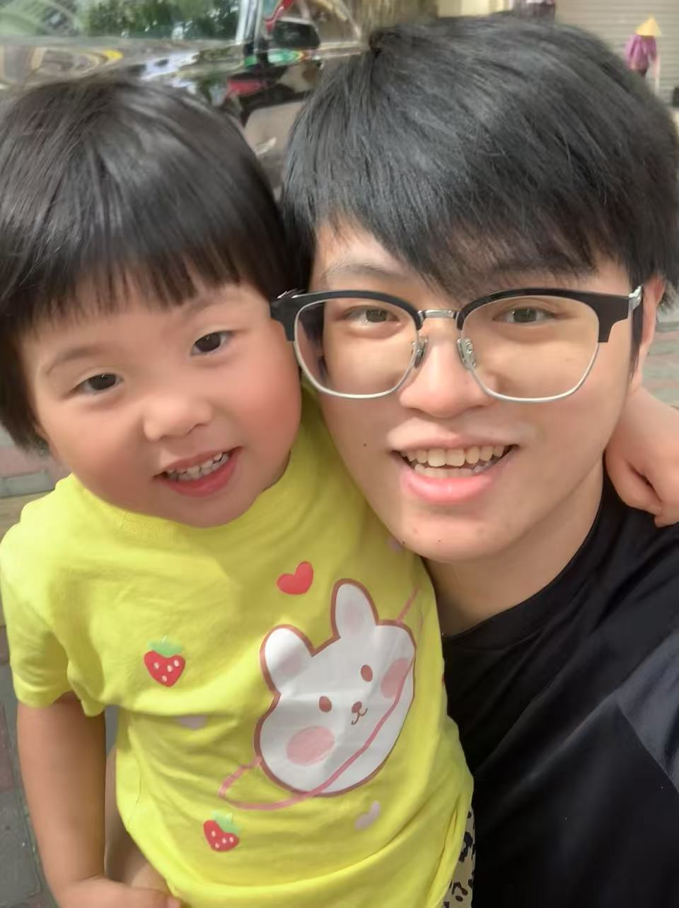

|  |
←←← My very cute~cute~cute~ daughter & me Department of Computer Science, National Tsing Hua University, 101, Section 2, Kuang-Fu Road, Hsinchu, Taiwan. Postcode: 30013 Email: alwayswithme@fjnu.edu.cn alwayswithme@gapp.nthu.edu.tw [ORCiD] [Google Scholar] [GitHub] [dblp] CCF YOCSEF FuZhou Academic Committee Member (AC Member), 中国计算机学会青年论坛福州分论坛学术委员 IEEE Member, CCF Member |
I will return to my alma mater, Fujian Normal University, for a faculty position.
I've received the Ph.D. degree from National Tsing Hua University in 2025, the master degree from National Central University in 2019, and the bachelor degree from Fujian Normal University in 2017. I live in Xiamen and Fuzhou, China.
My research area focuses on face anti-spoofing and rPPG Estimation. As the first author, I have been published in prestigious conferences in the field of computer vision, including CVPR, AAAI, BMVC, ICME, ICIP, and ACPR, as well as in renowned journals, including TIFS, Pattern Recognition, Information Science, and ATSIP.
I have reviewed papers from different CV/AI conferences, e.g., CVPR, ECCV, AAAI, ACM MM, and biomedical related journals, e.g., IJCV, TIFS, PR, TDSC, TIM.
Publishing papers is not easy. For the manuscripts I review, I strive to recommend acceptance with revisions whenever the quality of the work permits.
|
Enhancing Learnable Descriptive Convolutional Vision Transformer for Face Anti-Spoofing
Pei-Kai Huang, Jun-Xiong Chong, Ming-Tsung Hsu, Fang-Yu Hsu, Chiou-Ting Hsu Pattern Recognition, (Minor revision) , [中科院一区Top, CCF B,TH-CPL Rank B, SCIE:Q1, IF:7.5, h-index:180] Paper | Code |
|
Unsupervised Feature Disentanglement and Augmentation Network for One-class Face Anti-spoofing
Pei-Kai Huang, Jun-Xiong Chong, Ming-Tsung Hsu, Fang-Yu Hsu, Yi-Ting Lin, Kai-Heng Chien, Hao-Chiang Shao, Chiou-Ting Hsu Pattern Recognition, (Major revision) , [中科院一区Top, CCF B,TH-CPL Rank B, SCIE:Q1, IF:7.5, h-index:180] Paper | Code |
|
Multi-Modal Face Anti-Spoofing via Cross-Modal Feature Transitions
Jun-Xiong Chong, Fang-Yu Hsu, Ming-Tsung Hsu, Yi-Ting Lin, Kai-Heng Chien, Chiou-Ting Hsu,Pei-Kai Huang * (* corresponding author) Expert Systems with Applications, 2026, (Accepted) , [中科院一区Top, CCF C, SCIE:Q1] Paper | Code |
|
Fully Test-Time rPPG Estimation via Synthetic Signal-Guided Feature Learning
Pei-Kai Huang, Tzu-Hsien Chen, Ya-Ting Chan, Kuan-Wen Chen, Shih-Yu Yang, Yen-Chun Chou, Chiou-Ting Hsu Pattern Recognition , 2026 , [中科院一区Top, CCF B,Tsinghua (清华) B, SCIE:Q1 ] Paper | Code |
|
DD-rPPGNet: De-interfering and Descriptive Feature Learning for Unsupervised rPPG Estimation
Pei-Kai Huang, Tzu-Hsien Chen, Ya-Ting Chan, Kuan-Wen Chen, Chiou-Ting Hsu IEEE Transactions on Information Forensics & Security (TIFS) , 2025 , [中科院一区Top, CCF A,Tsinghua (清华) A, SCIE:Q1 ] Paper | Code |
|
Channel difference transformer for face anti-spoofing
Pei-Kai Huang, Jun-Xiong Chong, Ming-Tsung Hsu, Fang-Yu Hsu, Chiou-Ting Hsu Information Sciences , 2025 [中科院二区, CCF B,Tsinghua (清华) B , SCIE:Q1] Paper | Code |
|
A Survey on Deep Learning-based Face Anti-Spoofing
Pei-Kai Huang, Jun-Xiong Chong, Ming-Tsung Hsu, Fang-Yu Hsu, Cheng-Hsuan Chiang, Tzu-Hsien Chen, Chiou-Ting Hsu APSIPA Transactions on Signal and Information Processing , 2024 [中科院三区, ESCI:Q1 ] Paper |
|
SLIP: Spoof-aware one-class face anti-spoofing with Language Image Pretraining
Pei-Kai Huang, Jun-Xiong Chong, Cheng-Hsuan Chiang, Tzu-Hsien Chen, Tyng-Luh Liu, Chiou-Ting Hsu. The 39th Annual AAAI Conference on Artificial Intelligence (AAAI) , 2025, USA. , [ CCF A, Tsinghua (清华) A ] Paper | Code | Poster |
|
One-Class Face Anti-spoofing via Spoof Cue Map-Guided Feature Learning
Pei-Kai Huang, Cheng-Hsuan Chiang, Tzu-Hsien Chen, Jun-Xiong Chong, Tyng-Luh Liu, Chiou-Ting Hsu The IEEE/CVF Conference on Computer Vision and Pattern Recognition (CVPR) , 2024, Seattle WA, USA., [ CCF A, Tsinghua (清华) A ] Paper | Code | Video | Poster |
|
Test-Time Adaptation for Robust Face Anti-Spoofing
Pei-Kai Huang, Chen-Yu Lu, Shu-Jung Chang, Jun-Xiong Chong, Chiou-Ting Hsu British Machine Vision Conference (BMVC) , 2023, Aberdeen, UK, [ CCF C, Tsinghua (清华) B ] Paper | Code | Video | Poster |
|
LDCformer: Incorporating Learnable Descriptive Convolution to Vision Transformer for Face Anti-Spoofing
Pei-Kai Huang, Cheng-Hsuan Chiang, Jun-Xiong Chong, Tzu-Hsien Chen, Hui-Yu Ni, Chiou-Ting Hsu IEEE International Conference on Image Processing (ICIP) , 2023, Kuala Lumpur, Malaysia, [ CCF C, Tsinghua (清华) B ] Paper | Code | Video | Poster |
|
Single-Domain Generalization for Semantic Segmentation via Dual-level Domain Augmentation
Shu-Jung Chang*, Chen-Yu Lu*, Pei-Kai Huang*, Chiou-Ting Hsu (* equal contribution) IEEE International Conference on Image Processing (ICIP) , 2023, Kuala Lumpur, Malaysia, [ CCF C, Tsinghua (清华) B ] Paper | Video | Oral |
|
Towards Diverse Liveness Feature Representation and Domain Expansion for Cross-Domain Face Anti-Spoofing
Pei-Kai Huang, Jun-Xiong Chong, Hui-Yu Ni, Tzu-Hsien Chen, Chiou-Ting Hsu IEEE International Conference on Multimedia & Expo (ICME) , 2023, Brisbane, Australia, [ CCF B] Paper | Code | Video | Poster |
|
Learnable Descriptive Convolutional Network for Face Anti-Spoofing
Pei-Kai Huang, Hui-Yu Ni, Yan-Qin Ni, Chiou-Ting Hsu British Machine Vision Conference (BMVC), 2022, London, UK, [ CCF C, Tsinghua (清华) B ] Paper | Code | Video | Poster |